This post we will look at the general considerations for the design of the egress portal itself.
This is part of the DIY series in making your very own dimensional portal. The geometry of the egress station will stay the same regardless of how you use this dimensional portal. Whether it is intended as a “time machine”, a mechanism to traverse the “what if” worlds, or just something you want to use to improve your physical appearance, the geometry will not change.

Basic Introduction
Note that this is an article that is part of a long series of posts on DIY construction of a dimensional portal. This technology will permit a person to move anywhere in the universe geographically, move through time, and more in and out of different world-lines.
This page is part of a collection of my writings on how to make a home-made dimensional portal that actually works. This portal is a “poor man’s” version of the MAJestic dimensional portal that was present in NAS NASC Pensacola Florida back in 1981.
This particular post covers the geometry of the portal itself’ the “air gap” or region that that traveled must walk through in order to travel the various world-lines.
Teleportation is a proven fact, and is well understood in the quantum physics world. It has been demonstrated continuously and repeatedly in the laboratory as well. Though public demonstration of large objects is not available and considered "far fetched", the fact is this is a mature technology. This technology has been in possession of the United States Navy's ONI (Office of Naval Intelligence) branch of high technology MAJestic branch, of which I was a part of.
Overall, this post is part of a much larger series of posts. All of which describe a rather comprehensive DIY project. Within it is everything that you need to construct your very own dimensional portal. The big missing gap is the mapping of the dimensional coordinates. Because unless you are able to lay out a destination coordinate, you will have little use for this mechanism.
The equations tend to be a tad esoteric, but it’s nothing too difficult as long as you know some basic mathematics. Just follow the narrative and the instructions and you will be just fine.
This is part 10. The calculations and equations related to the actual portal geometry.
You are here.
I always like it when you are lost in a big museum, hospital or factory, and you come up to a big sign on the wall; a map really, that says “You are here.”. It helps you figure out where you are relative to the over all scheme of things.
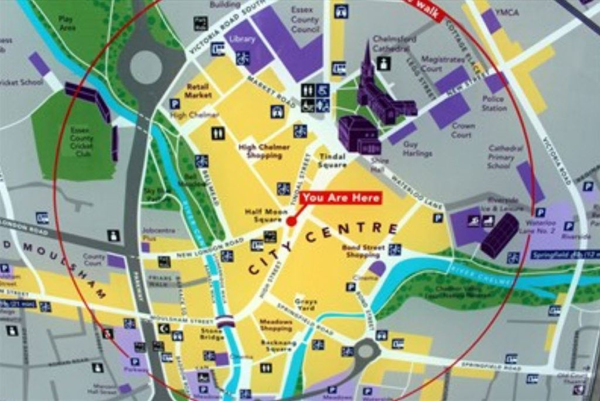
Let’s see where this post fits into the big scheme of things.
Essentially, the idea is quite simple, really. [1] You generate a massive, simply massive; “big honker” electromagnet. In it is [2] this “air gap” or a gap large enough for a person to walk though. [3] The magnetic field generated in the electromagnet is enormous. It is [4] strong enough to “erase” or “obscure” your current “coordinates” associated with this world-line and your life. Then, [5] new coordinates are over-laid over your body, [6] using frequency generation techniques, and [7] when the magnetic field collapses you “snap” right to the new reality or dimensions that you have imprinted.
It’s rather simple. The issues are in the implementation of the various steps.
You need to [8] measure the frequencies of location with extreme precision. You need [9] to be able to functionally understand how to change them to take you where ever you want to go. You need [10] to pulse the electromagnet into sine wave configuration, and [11] you need to have the traveler become brainwave neutral during the egress operation.
I’ve covered those steps elsewhere.
Here we will concentrate on the geometry of the “air gap” that the person (traveler) will walk into. It is section #2, above and highlighted in BOLD.
With this in mind, let’s crack open our electromagnetic handbooks and review just how a magnet works and how we can apply that knowledge to our particular application.
The design of magnets and electromagnets is a mature technology. I personally find it fascinating. As it is just a very interesting subject that I have taken a shine to. You can find all sorts of texts, websites, and papers written about this technology. And anything listed herein can be found elsewhere if you were so inclined to research elsewhere. In this post, I am going to take this very interesting technology and break it down into a very simple format, so that anyone trying to (or who desires of) building their own dimensional portal can understand the issues involved.
Air Gap
This is the “interface” where the traveler enters the transport mechanism. It is an open area. It is a space, and since it contains air, it is known as a “air gap” as it is typically a gap within a large metal ring.
Air gap, is a non-magnetic part of a magnetic circuit.
It is usually connected magnetically in series with the rest of the circuit, so that a substantial part of the magnetic flux flows through the gap. Here’s a three dimensional diagram of an air gap in a magnetic circuit…
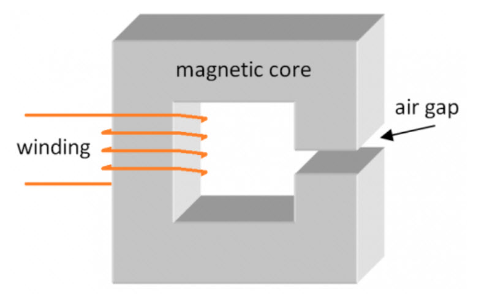
Depending on application, air gap may be filled with a non-magnetic material such as gas, water, vacuum, plastic, wood etc. and not necessarily just with air.3)4)
So we can say that if the device were enclosed within a pool of water, the person could swim though the gap and teleport to a new location. But why bother, right? We live and breathe and walk in air.
Flux Fringing
Due to increased reluctance of an air gap the flux spreads into the surrounding medium.
Think of water in a tube, as long as the tube keeps the water inside the tube, it flows forward without any loss or leakage. But the moment that you add a hole, or series of holes in the tube, you will have leaks. Water will squirt out, and as it does so, it will “take away” from the smooth flow of the rest of the water in the tube.
When you add an air gap to increase the reluctance of the core then it is almost as if you have decreased its permeability, and thereby lowered the inductance of a winding on it. Indeed, when you buy a core with a pre-fabricated gap then the manufacturer may specify what is called the effective permeability of the core, μ e. -Air gapped magnetic cores
This spreading eventually causes an ‘effect” known as the “flux fringing effect.”
Flux fringing - a phenomenon in which the magnetic flux flowing in a magnetic core spreads out (or fringes out) into the surrounding medium, for example in the vicinity of an air gap. -Flux fringing [Encyclopedia of magnetics and electromagneti…
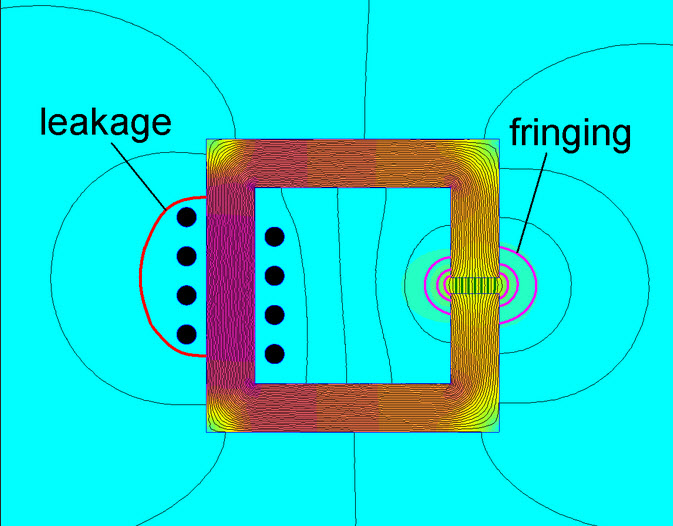
The point behind this is that we need a gap for the traveler to walk through, but the mere presence of the gap will “take away” or detract from the energy, power and efficiency of the magnetic flux in that gap.
In order to quantify how much magnetic flux you will lose, you need to calculate it. This is done by observing the “eddy current loss”.
Eddy Current Loss
Flux Fringing is generally an unwanted phenomenon which usually increases proximity and eddy current loss in conductors located in the vicinity of the air gap. To simplify; the “flux fringing” phenomenon subtracts away from the strength of the magnetic flux inside the air gap.
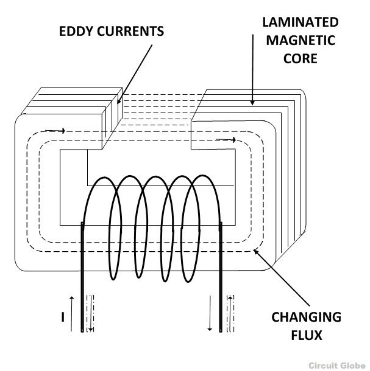
A sectional view of the magnetic core is shown in the figure above. When the changing flux links with the core itself, it induces emf in the core which in turns sets up the circulating current called Eddy Current. And these current in return produces a loss called eddy current loss or (I2R) loss, where I is the value of the current and R is the resistance of the eddy current path.
The strength and the magnitude of the loss of magnetic flux is a function of the geometry of the air gap and the over-all magnitude of the flux itself.
Reducing the Eddy Current Loss
If the core is made up of solid iron of larger cross-sectional area, the magnitude of I (current) will be very large and hence losses will be high. To reduce the eddy current loss mainly there are two methods.
- By reducing the magnitude of the eddy current.
The magnitude of the current can be reduced by splitting the solid core into thin sheets called laminations, in the plane parallel to the magnetic field. Each lamination is insulated from the other by a thin layer of coating of varnish or oxide film.
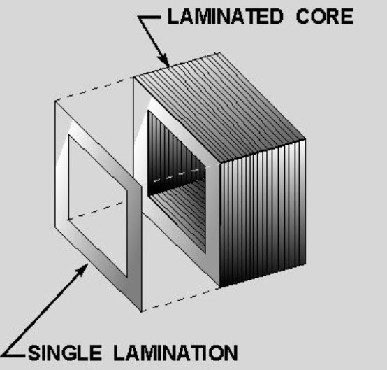
- By laminating the core.
By laminating the core, the area of each section is reduced and hence the induced emf also reduces. As the area through which the current is passed is smaller, the resistance of eddy current path increases.
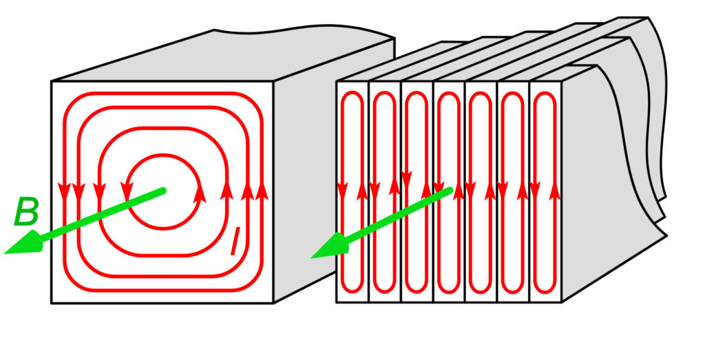
Influence on B-H loop
The B-H loop of a magnetic circuit is affected by the presence of an air gap. This is an important characteristic of the environment inside of the air gap.
The B-H loop is produced by measuring the magnetic flux (B) of a ferromagnetic material when the applied magnetizing force is changed (H). A ferromagnetic material which has been never before magnetized or demagnetized ferromagnetic material will trail the dashed line (see the figure) as magnetizing force (H) is increased.
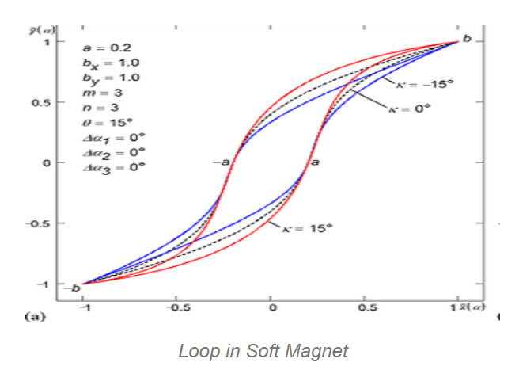
Permeability of non-magnetic material is low (such as air) and therefore it requires greater values of to obtain the same value of as compared with magnetically soft materials (such as iron). Here is a more detailed image of a typical B-H Loop showing key features of it.
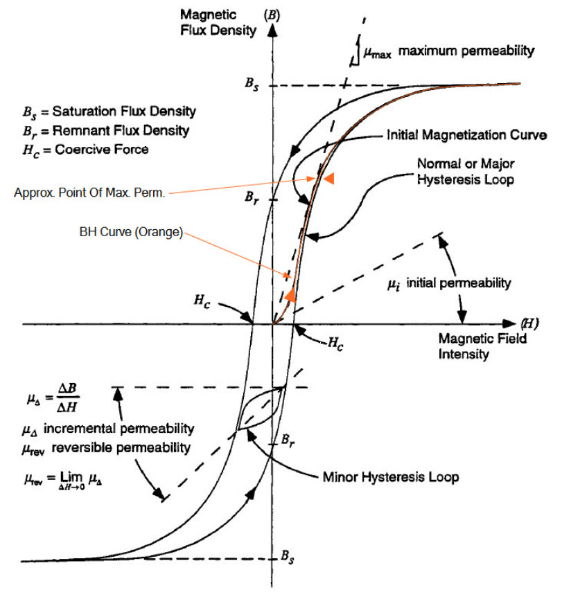
With the introduction of an air gap the B-H loop of a magnetic circuit gets “sheared” (slanted), hence the value of its slope proportional to the effective permeability is reduced.
Effective magnetic permeability (also apparent magnetic permeability1)), often denoted as μe, μeff or μa - a term used in analysis of magnetic performance of gapped cores. For a non-homogeneous core (e.g. gapped or composed of powder-like particles) this would be the value of magnetic permeability of a hypothetical homogeneous material which would exhibit the same permeability.
The amount of “shearing” is proportional to the length of the air gap – the larger the air gap the lower the slope. For our application, this air gap is quite large; it is the height of a human being.
For air core coil (no magnetic material present) the B-H characteristics become by definition the same as for the non-magnetic material encircled by the winding (e.g. air).
The influence of air gap on the shape of B-H loop for a cut core is shown below…
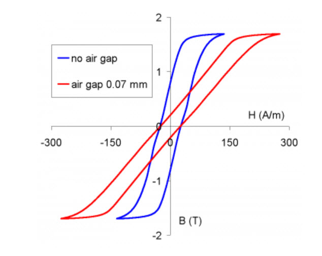
by S. Zurek, Encyclopedia Magnetica, CC-BY-3.0
Changes of effective permeability and linearisation of the B-H loops caused by increasing the air gap …
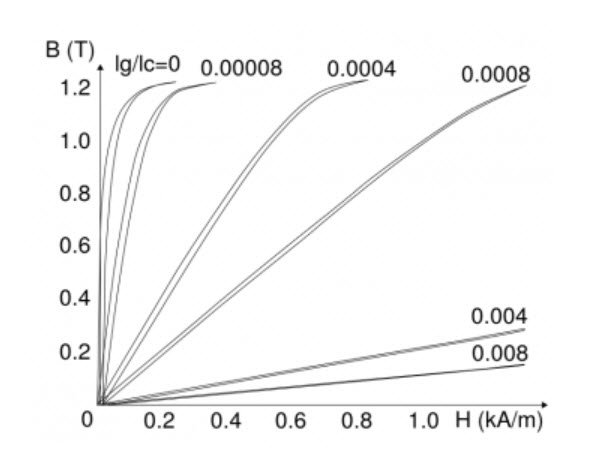
Drawing based on: G.B. Finke, Gapped magnetic core structures, Magnetic Metals Corporation, {accessed 17 Jun 2013}.
by S. Zurek, Encyclopedia Magnetica, CC-BY-3.0
Conversely, if no air gap is present then the slope becomes as steep as possible, and the B-H loop will represent the closest approximation of the characteristic of the magnetic material (for a given shape of the magnetic circuit). For our egress portal design, the B-H Loop is very, extremely slanted. It is nearly horizontal. And that does pose some design challenges.
The creation of a workable “air gap” can be achieved for instance by careful polishing or lapping of the flat faces, in order to reduce the surface roughness and the amount of space between the magnetic surfaces. 5)
Calculator of effective magnetic permeability from air gap
For a magnetic circuit with uniform cross-section the value of effective permeability μeff can be calculated if the lengths and permeabilities of both part of the circuit are known.
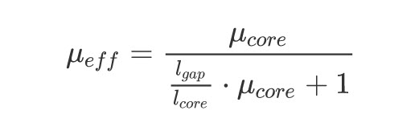
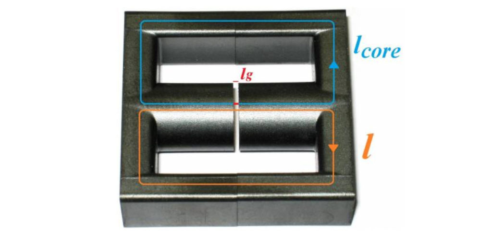
I find this all very interesting. But you know, many people cannot visualize the differences between a small model and the actual real object. It’s like that scene from the Movie Hangover III. Where the one character looks at the model of an estate, and comments, (more or less)…
[to Phil and Stu] Alan: You guys know what’s going on, right? Phil: What do you mean? Alan: Well… [to Chow] Alan: And please correct me if I’m wrong. [pointing to the miniature villa] Alan: We’re not breaking into this house, this house is too small. We’re breaking into another house. This is just a model, right, Chow? Mr. Chow: What?
In short, if we use the simpler, most basic design for this electromagnet, then the magnet will have to be huge. You would take the picture of the above magnet, and scale it up. So the air gap which is perhaps 1/8 of an inch wide, would actually be six or seven feet tall.
Thus making the entire magnet building-sized.
Gapped and air-cored inductors
To understand other alternatives to this design and style of an electromagnet, we need to understand what options that we have. And, lucky for us, there are many. We can use the technologies involved in inductors to help us work out more “reasonable” solutions that won’t require us to get a building permit to create a five story tall electromagnet.
Now, fundamentally, the presence of the air-gap will change the ability of the electromagnet to work efficiently. From it’s initial conception through to utility, the entire system is fraught with inefficiencies. Never the less, use of it in our application is guaranteed to work provided that the magnetic flux is large enough.
Energy storing inductors
Air gaps are an integral part of gapped inductors.
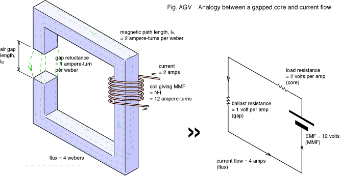
The gap reduces effective permeability of a given magnetic circuit and allows storing much greater energy before saturation is reached.
Effective magnetic permeability (also apparent magnetic permeability), often denoted as μe, μeff or μa - a term used in analysis of magnetic performance of gapped cores. For a non-homogeneous core (e.g. gapped or composed of powder-like particles) this would be the value of magnetic permeability of a hypothetical homogeneous material which would exhibit the same permeability.
Increasing the gap reduces the inductance, so the winding must have more turns to compensate accordingly.12)
The larger the air-gap, the more turns of wire that must be used in the electro-magnet.
For a given size of inductor the amount of stored energy versus applied air gap can be represented by a Hanna curve.13)
- Optimizing Design with the Hanna Curve – Technical Articles
- HANNA CURVE CALCULATIONS
- Design to “Boost” Inductance under Direct Current B ias …
- Magnetic Hysteresis Loop including the B-H Curve
If operation with high currents is required then the air gap might be very large, so that the magnetic circuit is quite “open”.
For instance, a common design for electronic chokes is to place a winding on a magnetic rod. The magnetic field lines must close through the surrounding air (outside of the winding), so the length of the air gap is comparable with the length of the rod.14)
In some cases the currents are so high that it is very difficult or cost prohibitive to design the inductor with a magnetic core. In such case a so-called “air core” is used, where the windings are supported by a non-magnetic structure, and the whole magnetic circuit is effectively one big air gap.
The distribution of air gap can be also extended even further. There are magnetic materials, which are made from small particles (mostly based on powder iron, sendust or moly permalloy powder) bound together in such a way as to contain certain percentage of non-magnetic volume in them.
Sendust Sendust is a magnetic metal powder that was invented by Hakaru Masumoto at Tohoku Imperial University in Sendai, Japan, about 1936 as an alternative to permalloy in inductor applications for telephone networks. Sendust composition is typically 85% iron, 9% silicon and 6% aluminum. The powder is sintered into cores to manufacture inductors. Sendust cores have high magnetic permeability (up to 140 000), low loss, low coercivity (5 A/m) good temperature stability and saturation flux density up to 1 T.
Moly Permalloy . An alloy with exceptionally high magnetic permeability, very low coercive force, very low core losses, and low remnance by magnetic field annealing. The alloy finds application in magnetic shielding where fields much less than the Earth’s magnetic field are required. The highest volume applications using laminations or tape wound cores today are ground fault interrupter and modem transformer cores. The alloy is used as well in a variety of other high performance transformer core applications such as tape recorder heads and audio transformers. Control of the cooling rate during heat treatment and superimposition of various customer bake treatments are used to develop the most suitable magnetic quality for the application
The resultant effective permeability is much lower, but the air gap is uniformly distributed throughout the whole material.16) The fringing effect and leakage flux is greatly reduced, which is especially important for high-frequency applications.
Electromagnets
If the idea of creating a building-sized electromagnet is not appealing, there are other ways of conducting and producing electromagnets. Such as this one. Large electromagnet with a 200 mm long air gap..
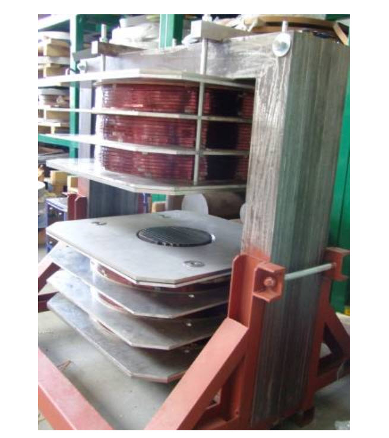
by S. Zurek, Encyclopedia Magnetica, CC-BY-3.0
A common performance expected from an electromagnet is to generate magnetic field within a given volume of an air gap.
The purpose of an electromagnet is to generate a strong magnetic field within the air gap.
This could be done for a number of tasks, for instance:
- to exert mechanical force on a designed part – this operation is similar to electromagnetic actuators
- to exert mechanical force on inclusions or other elements suspended in non-magnetic matter – a principle used in magnetic separators42), recording of shapes on magnetic film43) and some medical applications (e.g. guiding particles inside of blood vessels)44)
- to provide magnetic field required for material processing45)46)
And this is exactly what our use of this system is for.
Of the shelf designs for experimentation purposes.
Why go straight to the creation of large (building sized) electromagnets, when there are well made, smaller, units available? You can buy these smaller units, and run tests and experiments using them. You will be able to do everything that a big electromagnet can do, except send a human-sized object to another dimension.
Here is one such product…
DXSBV Double-Yoke Single-Tuning Adjustable Air Gap Electromagnet Double-yoke electromagnet, whose magnetic pole pieces stay vertically to the ground, with downward magnetic pole piece to be fixed, topside magnetic pole piece and air gap to be adjustable, the magnetic field is vertical with the ground. The main feature is easy to place and remove the sample, which is suitable for repeated measurement, widely used in magnetic materials testing.
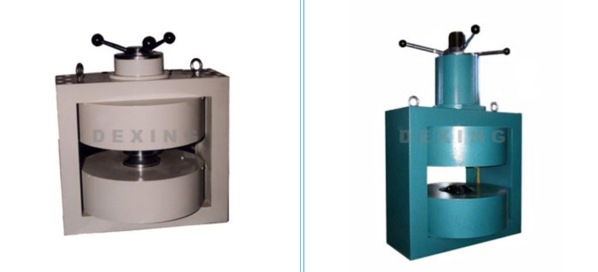
And here are some specifications for some of the models that this company produces…
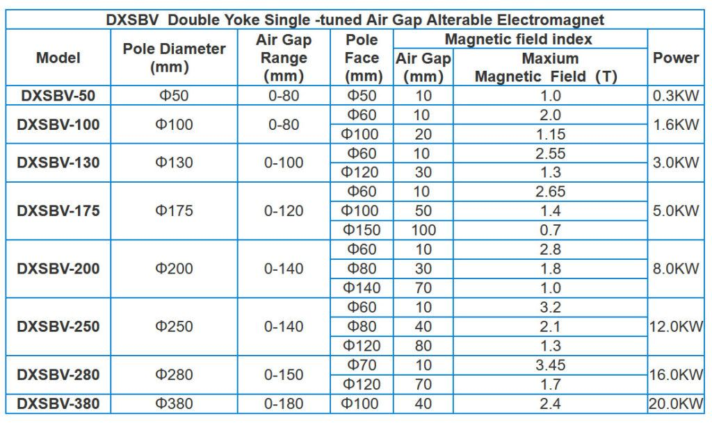
The inspired DIY dimensional experimenter might be interested in following up with this at the company website HERE.
Energy stored in air gap
A magnetic circuit behaves like a “conductor” so that the magnetic field can be efficiently guided along desired path. If a high-permeability material is used then very little energy will be stored in the magnetic core. However, an air gap introduces a discontinuity and due to its low permeability stores significant amount of magnetic energy, as compared to the same volume of magnetic core.
This energy storing property is utilized, for instance, in energy storing inductors and flyback transformers, in which air gap in a pivotal design parameter. On the one hand, the air gap is used for storing the actual energy, but on the other it changes operating characteristics of the B-H curve and allows driving the inductor at higher currents hence higher magnetic field strength thus extending the range before magnetic saturation occurs.
For a simple magnetic circuit with a single air gap (see the first image at the top), for which the core is made out of high-permeability material such that , with the air gap itself and the flux density in the air gap being uniform, and if the flux fringing can be neglected, it can be derived that the stored energy is: 47)
– permeability of free space (H/m).
This equation is our GOLD STANDARD from which to calculate the air gap dimensions.
Air Gap Dimensions
Here is what I would suggest to use as the volume and the dimensions for the air gap.
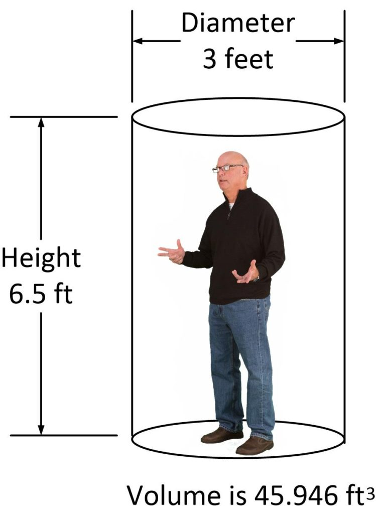
Flux fringing
Flux fringing (red arc) around an air gap in magnetic core
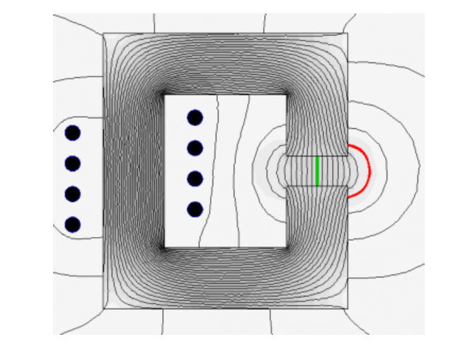
by S. Zurek, Encyclopedia Magnetica, CC-BY-3.0
Flux fringing is caused by the fact that the reluctance of the concentrated air gap is much greater than that of the core. The flux tries to spread as wide as possible in order to minimise the drop of magnetomotive force across the air gap. As a result of flux fringing the total reluctance of the circuit is somewhat lower. This has several major effects.
In energy-storing inductors the inductance is related to the reluctance of the air gap. The fringing lowers the overall reluctance, so that the resulting inductance is somewhat higher. This needs to be taken into account so that the inductance value is appropriate for a given design. There are various empirical equations suggested in literature for calculating the correction of this effect.
McLyman
For instance McLyman suggest the following “flux fringing factor” ():48)
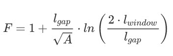
Rectangular Cross Section
Another example is when the area of the air gap is scaled according to its length. For instance if the magnetic core cross-section is a rectangle the following calculation can be used: 49)
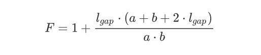
Hurley and Wölfle
Yet another approximating equation is given by Hurley and Wölfle50)
However, all such equations are only approximate, and usually work only under the assumption that the length of the air gap is much smaller than any of the dimensions of the core.
Additional Copper Loss
The second effect is additional copper loss due to the fact that fringing flux “bulges away” from the air gap. Usually most of the core window is occupied by windings and if they are exposed to fast-changing fringing flux (e.g. in flyback transformers) this causes additional eddy current losses in the windings.51)
Entry Angle
The third effect is that the fringing flux enters the core perpendicularly to the normal flow of magnetic field. In soft ferrites this is not a problem. But in laminated cores this flux does not travel along the laminations, but enters them perpendicularly to their surface, resulting in a large value of normal component, inducing elevated eddy currents and thus additional iron loss. A distributed air gap is employed in order to reduce this effect (see next section).
References
Here’s some reference for further research.
- 1)John R. Brauer, Magnetic Actuators and Sensors, John Wiley & Sons, 2006, ISBN 9780471777700
- 2)Austin Hughes, Electric Motors and Drives: Fundamentals, Types and Applications, 3rd edition, Newnes, 2005, ISBN 9780080522043
- 3)Multigo Vertical Centrifugal Multistage Pumps, datasheet, {accessed 16 Nov 2012}
- 4)Delmar R. Riffe, Richard D. Olson, David M. Edison, J. Spreadbury, Patent US4030058, Inductive coupler, 1977
- 5) International standard, IEC 60404-3, Magnetic materials – Part 3: Methods of measurement of the magnetic properties of magnetic sheet and strip by means of a single sheet tester
- 6)Juha Pyrhonen, Tapani Jokinen, Valeria Hrabovcova, Design of rotating electrical machines, Wiley, 2008, ISBN 978-0-470-69516-6, p. 298
- 7)Austin Hughes, Electric motors and drives – fundamentals, types and applications, 3rd edition, Newnes, 2006, ISBN 978-0-7506-4718-2, p. 197
- 8)S.K. Bhattacharya, Electrical Machines, 3rd edition, McGraw-Hill, 2009, ISBN 978-0-07-066921-5, p. 74
- 9)Dieter Gerling, Design of an Induction Motor with Multilayer Rotor Structure and Large Gap, Proceedings of the International Conference on Electrical Machines (ICEM), 2000, Vol. 1, Helsinki, Finland, p. 458
- 10)Hamid A. Toliyat, Gerald B. Kliman, Handbook of electric motors, 2nd edition, CRC Press, 2004, ISBN 0-8247-4105-6, p. 47
- 11)Vassilios A. Profillidis, Railway Management And Engineering, 3rd edition, Ashgate Publishing, 2006, ISBN 978-0-7546-4854-3, p. 33
- 12), 13)Alex Goldman, Magnetic components for power electronics, Kluwer Academic Publishers, 2002, ISBN 0-7923-7587-4, p. 116
- 14)Coilcraft, PCV-0 Series, Power chokes – vertical mount, Document 135-1, 05/01/2012, {accessed 20 Nov 2012}
- 15)Clifford G. Thiel, Darin Driessen, Debabrata Pal, Frank Feng, Patent US7573362, High current, multiple air gap, conduction cooled, stacked lamination inductor, 2007
- 16)Marian K. Kazimierczuk, High-Frequency Magnetic Components, John Wiley & Sons, 2011, ISBN 9780470714539, p. 67
- 17)Igor Abramov, Trimmable inductor, Patent US6005467, 1999
- 18)Juergen Schlabbach, Karl-Heinz Rofalski, Power System Engineering: Planning, Design, and Operation of Power Systems and Equipment, John Wiley & Sons, 2008, ISBN 978-3-527-40759-0, p. 282
- 19)Image of air-cored radio inductor, Wikimedia Commons, {accessed 20 Nov 2012}
- 20)Takashi Miura, Yoshiaki Kamiya, Electromagnetic polar relay, Patent US5150090, 1992
- 21)John S. Zimmer, Miniature relay with double air gap magnetic circuit, Patent US3553612, 1971
- 22)Masami Hori, Norimasa Kaji, Hiromi Nishimura, Yoshinobu Okada, Polarized electromagnetic relay, Patent EP0361392B1, 1994
- 23)Richard E. Tippner, Rotating electromagnetic solenoid motor, Patent US4214178, 1980
- 24)Kou C. Lin, Charles E. Burkhardt, Compact step-lap magnetic core, US Patent US4445104, 1980
- 25), 27) P. Marketos, T. Meydan, D. Snell, Performance of single-phase transformer cores assembled from consolidated stacks of electrical steels, Journal of Magnetism and Magnetic Materials, Vol. 254-255, 2003, p. 612-614
- 26)Bharat Heavy Electricals Limited , Transformers, 2nd edition, Tata McGraw Hill Publishing Company Ltd, p. 100, ISBN 978-0-07-048315-6
- 28)Dung A. Ngo, Kimberly M. Borgmeier, Method for manufacturing a wound, multi-cored amorphous metal transformer core, Patent US6668444, 2003
- 29)Unicore cores, ArcelorMittal, {accessed 19 Aug 2014}
- 30)Network Protection & Automation Guide, Alstom Grid, 2011, {accessed 19 Aug 2014}
- 31)Muhammad Rashid (editor), Power Electronics Handbook: Devices, Circuits, and Applications, Butterworth-Heinemann, 2011, ISBN 978-0-12-382036-5, p. 39
- 32)Power Integrations Inc., TOPSwitch (R) flyback transformer construction guide, Application note AN-18, July 1996, {accessed 28 Nov 2012}
- 33)Open Loop Hall Effect, Hall effect current transducers (O/L), LEM, {accessed 11 Dec 2012}
- 34)Hall effect current sensors, Current transformers & Toroidal cores, Telcon, {accessed 11 Dec 2012}
- 35)Current Sensors Line Guide, Honeywell, June 2008, {accessed 11 Dec 2012}
- 36)Pierre Turpin, Rogowski current sensor, Patent US20120126789, 2012
- 37)CWT Ultra miniature wideband current probe for ac current measurement, Powertek, {accessed 19 Aug 2014}
- 38)Powertek, CWT Ultra mini data sheet, {accessed 19 Aug 2014}
- 39), 41)Valery Rudnev, Don Loveless, Raymond Cook, Micah Black, Handbook of Induction Heating, Marcel Dekker, 2003, ISBN 0-8247-0848-2, p. 364
- 40) R.S. Ruffini, Jr., V.S. Nemkov, Magnetic Field Control and Concentration in Induction Heating coils, Heat Treating, Proceedings of the 16th ASM Heat Treating Society Conference & Exposition, 19-21 March 1996, Cincinatti, Ohio, US, p. 127
- 42)Magnetic Grate RMM 3-20-25, The Research and Development Office MAGNETO,. {accessed 8 Jan 2013}
- 43)Magnetic Field Indicator MFI-3, The Research and Development Office MAGNETO. {accessed 8 Jan 2013}
- 44)Attila Meretei, Systems and methods for removing plaque from a blood vessel, Patent US20060142632, 2004
- 45)A. Kozlowski, S. Zurek, R. Rygal, Influence of the number of excitation coils on uniformity of distribution of magnetic flux density in an air gap, 1&2DM Workshop, September 2012, Vienna, Austria
- 46)Flat (F) loops, VACUUMSCHMELZE GmbH & Co. KG, {accessed 8 Jan 2012}
- 47)W.G. Hurley, W.H. Wolfle, Transformers and Inductors for Power Electronics: Theory, Design and Applications, John Wiley & Sons, 2013, ISBN 9781118544679, example 2.3
- 48), 51)Colonel William T. McLyman, Transformer and Inductor Design Handbook, CRC Press, 2004, ISBN 9780824751159, section “Fringing flux” in chapter 8
- 49)Marian K. Kazimierczuk, High-Frequency Magnetic Components, John Wiley & Sons, 2011, ISBN 9781119964919, p. 38
- 50)W.G. Hurley, W.H. Wölfle, Transformers and Inductors for Power Electronics: Theory, Design and Applications, John Wiley & Sons, 2013, ISBN 9781118544679
Conclusion
The first step in building this DIY teleportation / dimensional egress portal is to construct the electromagnet that will be used to erase the universal location frequencies of the traveler. Any strong and powerful enough magnetic field will do, but in this post we discuss using electomagnets with an enormous air gap to provide this ability.
Further, commercially available systems (of a much smaller scale) are available for purchase and use for experimentation purposes, and for purposes of obtaining location frequency data, and that associated with time, and location.